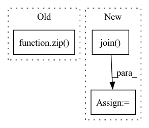

Pattern ID :11247

Before Change
trajectory_history = torch.cat(all_trajectory_history)
intent_pose = torch.cat(all_intent_pose)
trajectory_future = torch.cat(all_trajectory_future)
self.items = list(zip(img_history, trajectory_history, intent_pose, trajectory_future))
self.img_transform = img_transform
After Change
self.trajectory_history_shape = (10, 3)
self.trajectory_future_shape = (10, 3)
data_sizes = np.load(os.path.join(_CURRENT, "../data/", "dataset_sizes.npy"))
if dataset_type == "train":
self.data_size = data_sizes[0]
elif dataset_type == "val":
self.data_size = data_sizes[1]
else:
self.data_size = data_sizes[2]
self.img_transform = img_transform
In pattern: SUPERPATTERN
Frequency: 3
Non-data size: 3
Instances
Fragment ID: 38355929
Project Name: xushenlz/parksim
Commit Name: 07084f704d2db178c239bfda3fcafe486da20f74
Time: 2022-04-22
Author: lacayomatt@gmail.com
File Name: python/parksim/trajectory_predict/intent_transformer/dataset.py
M Class Name: IntentTransformerDataset
N Class Name: IntentTransformerDataset
M Method Name: __init__(3)
N Method Name: __init__(3)
M Parent Class: Dataset
N Parent Class: BaseTransformerDataset
M File Name: python/parksim/trajectory_predict/intent_transformer/dataset.py
N File Name: python/parksim/trajectory_predict/intent_transformer/dataset.py
M Start Line: 83
M End Line: 98
N Start Line: 45
N End Line: 66
'>
Before Change
est = musdb.DB(root=self.estimates_dir, subsets="test", is_wav=True)
results = museval.EvalStore(frames_agg="median", tracks_agg="median")
for track, estimated_track in zip(mus.tracks, est.tracks):
estimates = {}
for target in self.sources + ["accompaniment"]:
estimates[target] = estimated_track.targets[target].audio
After Change
estimated_accompaniment = 0
for target in self.sources:
estimated_path = os.path.join(self.estimates_dir, name, "{}.wav".format(target))
estimated, _ = torchaudio.load(estimated_path)
estimated = estimated.numpy().transpose(1, 0)
estimates[target] = estimated
estimated_accompaniment += estimated
'>
Fragment ID: 38355933
Project Name: tky823/dnn-based_source_separation
Commit Name: 47bf376b81ab3a2a1dae78ac3dd78f7458fbb8a1
Time: 2021-08-14
Author: 40362510+tky823@users.noreply.github.com
File Name: egs/musdb18/d3net/src/adhoc_driver.py
M Class Name: AdhocTester
N Class Name: AdhocTester
M Method Name: eval_all(1)
N Method Name: eval_all(1)
M Parent Class: TesterBase
N Parent Class: TesterBase
M File Name: egs/musdb18/d3net/src/adhoc_driver.py
N File Name: egs/musdb18/d3net/src/adhoc_driver.py
M Start Line: 360
M End Line: 372
N Start Line: 359
N End Line: 383
'>
Before Change
def run(self):
results = museval.EvalStore(frames_agg="median", tracks_agg="median")
for track, estimated_track in zip(self.mus.tracks, self.estimated_mus.tracks):
scores = self.run_one_track(track, estimated_track)
results.add_track(scores)
After Change
estimated_accompaniment = 0
for target in self.sources:
estimated_path = os.path.join(self.estimates_dir, name, "{}.wav".format(target))
estimated, _ = torchaudio.load(estimated_path)
estimated = estimated.numpy().transpose(1, 0)
estimates[target] = estimated
if target != "vocals":
'>
Fragment ID: 38355936
Project Name: tky823/dnn-based_source_separation
Commit Name: ffe57efd9e2dde3201347389cb13de92cf222706
Time: 2021-11-02
Author: delta9guitar97@gmail.com
File Name: egs/musdb18/common/src/driver.py
M Class Name: EvaluaterBase
N Class Name: EvaluaterBase
M Method Name: run(1)
N Method Name: run(1)
M Parent Class:
N Parent Class:
M File Name: egs/musdb18/common/src/driver.py
N File Name: egs/musdb18/common/src/driver.py
M Start Line: 293
M End Line: 297
N Start Line: 302
N End Line: 329